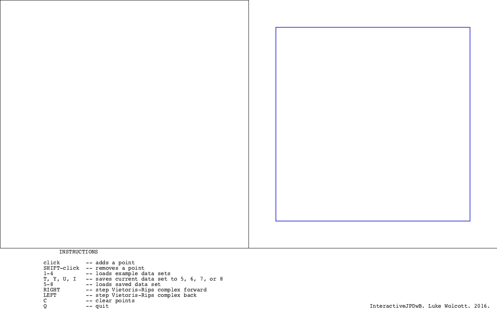
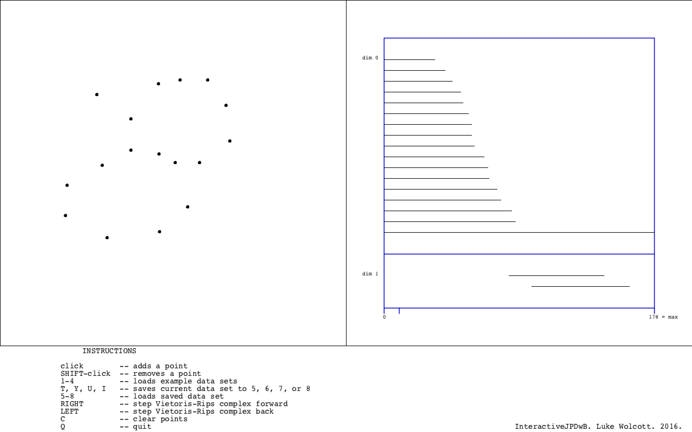
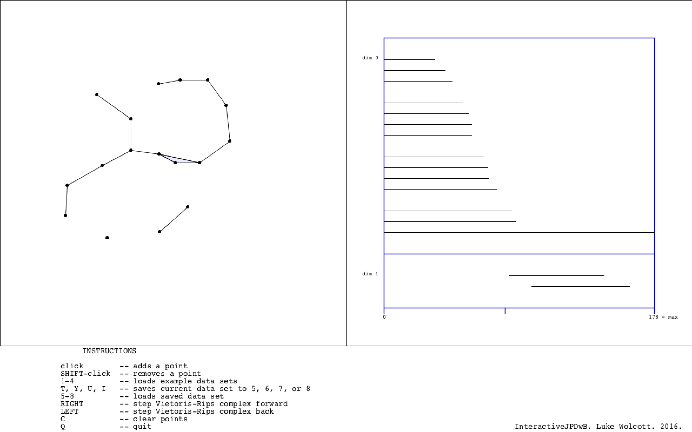
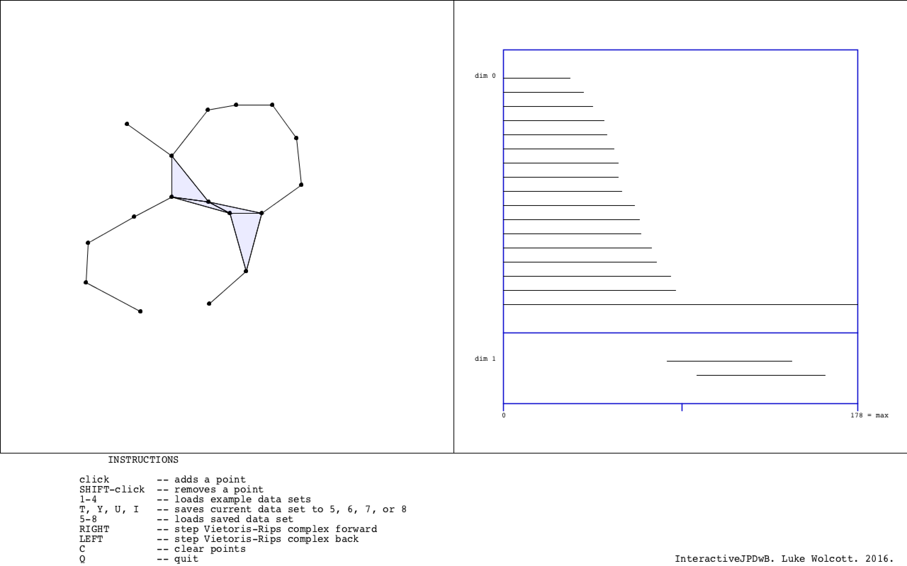
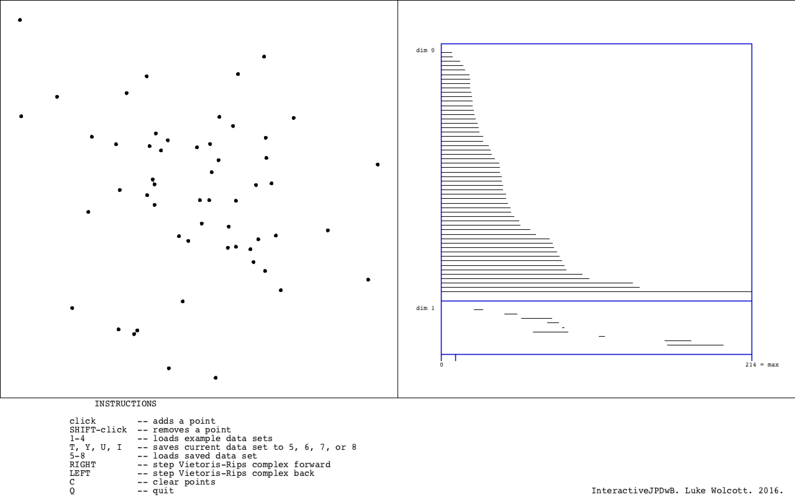
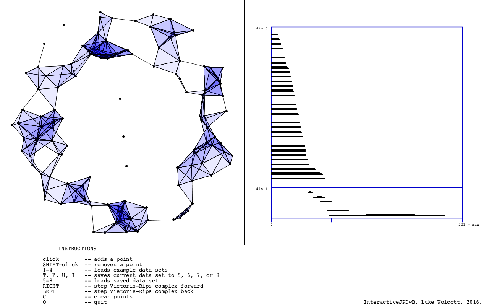

InteractiveJPDwB is an interactive Javaplex demo with barcodes that runs as a Processing sketch. It was written by Luke Wolcott, building on javaplexDemo.pde distributed by the appliedtopology.org people at https://github.com/appliedtopology/javaplex.
Right now InteractiveJPDwB lives at https://github.com/lukewolcott/InteractiveJPDwB.
Processing is an IDE and programming language that is well-suited for visualization, but since it is not common I thought it would be useful to show some screenshots of what InteractiveJPDwB.pde looks like when run in Processing.
The following short video runs through the main features of InteractiveJPDwB.
The program starts with an empty 2D field to the left, an empty barcode to the right, and instructions at the bottom.
The user can add points by clicking. This creates a 2D data set. The barcode is calculated and displayed in realtime on the right. Roughly speaking, dimension zero lines correspond to connected components and dimension one lines to holes in the data set.
By holding down SHIFT and clicking on a point, it is removed from the data set and the barcode is automatically updated.
By hitting the right and left arrows, one can scan through the Vietoris-Rips filtration parameter r. (This functionality comes from the original javaplexDemo.pde upon which InteractiveJPDwB.pde is based.) Points are connected with a line if they are within 2r of each other.
There is a progress bar along the bottom edge of the barcode, that keeps track of the value of the filtration parameter. It moves right and left with the arrow keys. Notice that the vertical slice of the barcode at each parameter value records the homology of the corresponding shape on the left. The number in the bottom right corner of the barcode is the maximum r value computed.
Contained in the data folder that comes with InteractiveJPDwB.pde are several 2D data sets. By pressing 1-4, the user can load these into the field at left and see the barcode.
These data sets can then be manipulated further.
It is possible to temporarily save a data set and barcode. Press T, Y, U, or I to save and store data (not case sensitive). To load data that has been saved in this way, press 5, 6, 7, or 8 respectively. For example, one could use this functionality to switch back and forth between two data sets and compare their barcodes. The data is not saved to a file, so is lost once InteractiveJPDwB is closed.
